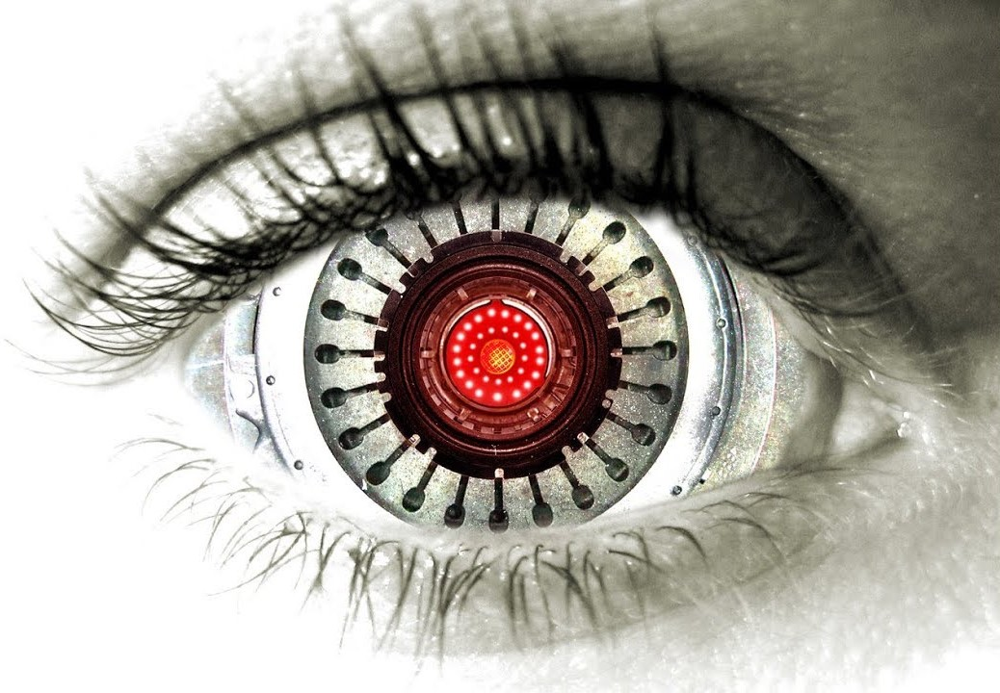
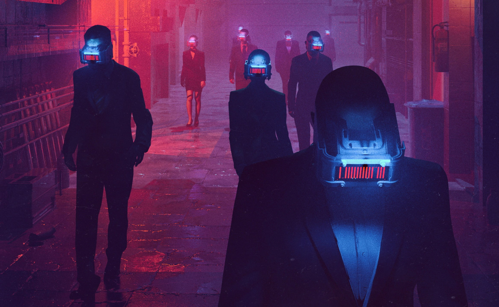
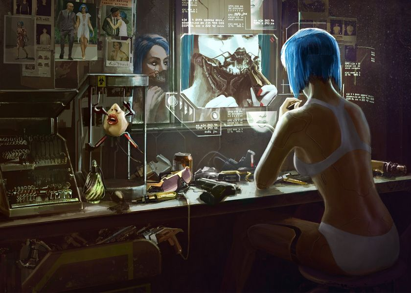
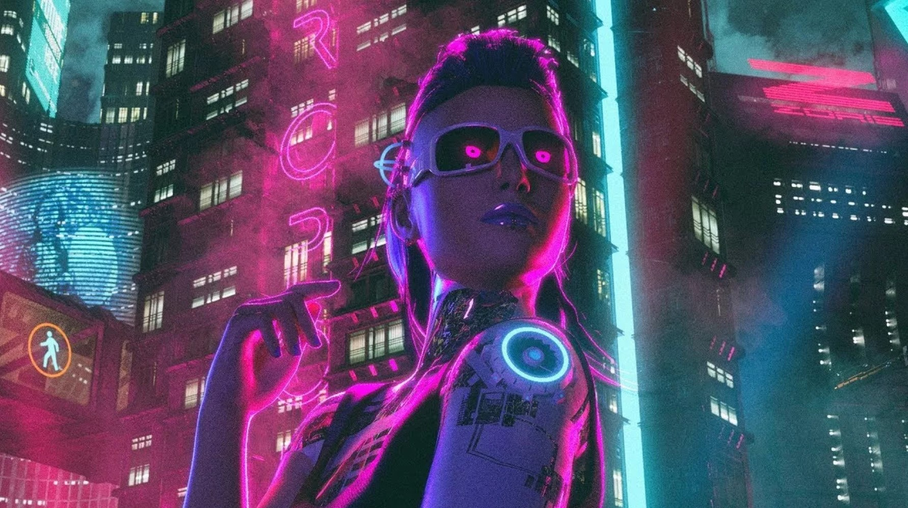
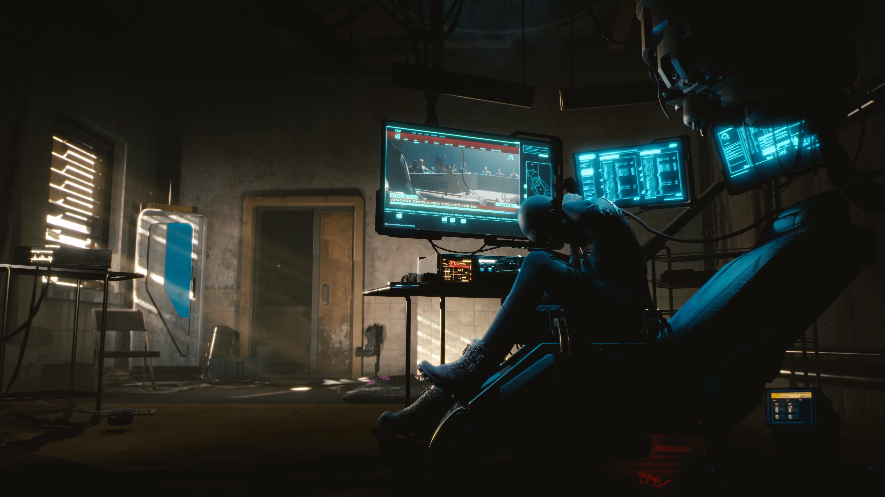

Cyberpunk
Эволюция мечты
Cyberpunk - это не просто жанр
Это образ мышления
Киберпанк родился в 1980-х годах как ответ на быструю цифровую революцию. Он представлял мир будущего, где технологии глубоко проникли в жизнь людей, определяя их судьбы. Но cyberpunk - это не только фантастические технологии, это также глубокие размышления о человеческой природе, о социальных изменениях, о влиянии цифровой эпохи на нашу культуру и общество.


Что такое киберпанк
Cyberpunk: Город света и тени
Cyberpunk - это не просто мрачный футуристический жанр. Это яркая и противоречивая реальность, где технологии и человеческая природа вступают в драматическую и неожиданную схватку. Это мир мегаполисов, подсвеченных неоновыми знаками, где кибернетические импланты становятся частью тела, а киберпространство - новой реальностью.


Почему киберпанк актуален
Cyberpunk: Пророчество, ставшее реальностью
В 1980-х годах cyberpunk казался далеким будущим. Но сегодня, когда искусственный интеллект, биотехнологии и виртуальная реальность становятся неотъемлемой частью нашей жизни, мы начинаем видеть в нем отражение нашего собственного мира. Cyberpunk не просто жанр научной фантастики. Он предлагает провокационные вопросы о нашем отношении к технологиям, о социальных изменениях и о том, что означает быть человеком в эпоху цифровых трансформаций.


Влияние на мир
Cyberpunk: Вдохновение будущего
Cyberpunk влияет на нашу культуру не только с помощью завораживающего визуала. Его идеи находят отражение в фильмах, литературе, искусстве, музыке и видеоиграх. "Бегущий по лезвию", "Матрица", "Чужой" - все они во многом вдохновлены cyberpunk и дают нам увидеть возможные пути развития нашего мира.

